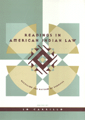

<body bgcolor="#FFFFFF" text="#000000" link="#0000FF" vlink="#CC0000" alink="#CC0000"><center><hr width="350" size="1" align="center" noshade>33 works that introduce and conceptualize some of the most symbolically important areas of federal Indian law: identity, reparations, incommensurability, cultural property, tribal governance, and religious freedom<hr width="350" size="1" align="center" noshade><p><a href="https://cdcshoppingcart.uchicago.edu/Cart/ChicagoBook.aspx?ISBN=9781566395816&&PRESS=temple" target="_top">Buy this book!</a> | <a href="https://cdcshoppingcart.uchicago.edu/Cart/Cart.aspx?PRESS=temple" target="_top">View Cart</a> | <a href="https://cdcshoppingcart.uchicago.edu/Cart/Cart.aspx?PRESS=temple" target="_top">Check Out</a></p><p></p></center><!--none//--><h1>Readings in American Indian Law</h1>
<H2>Recalling the Rhythm of Survival</H2>
<h3>edited by Jo Carrillo</h3>
<P>cloth 1-56639-581-X $90.50, Dec 97, <FONT COLOR=#990033>Available</FONT>
<br>paper 1-56639-582-8 $43.95, Dec 97, <FONT COLOR=#990033>Available</FONT>
<BR> 353 pp
7x10
1&nbsp;figure
</P><p>This collection of works many by Native American scholars introduces selected topics in federal Indian law. <i>Readings in American Indian Law</i> covers contemporary issues of identity and tribal recognition; reparations for historic harms; the valuation of land in land claims; the return to tribal owners of human remains, sacred items, and cultural property; tribal governance and issues of gender, democracy informed by cultural awareness, and religious freedom.
<p>Courses in federal Indian law are often aimed at understanding rules, not cultural conflicts. This book expands doctrinal discussions into understandings of culture, strategy, history, identity, and hopes for the future. Contributions from law, history, anthropology, ethnohistory, biography, sociology, socio-legal studies, and fiction offer an array of alternative paradigms as strong antidotes to our usual conceptions of federal Indian law.
<p>Each selection reveals an aspect of how federal Indian law is made, interpreted, implemented, or experienced. Throughout, the book centers on the ever present and contentious issue of identity. At the point where identity and law intersect lies an important new way to contextualize the legal concerns of Native Americans.
<BR>&nbsp;<h2>Excerpt</h2><P>Excerpt available at <a href="http://www.temple.edu/tempress">www.temple.edu/tempress</a></p>
<BR>&nbsp;<h2>Contents</h2><P>
<p>Preface and Acknowledgments
<p><b>Part I: Identity and Organized Indian Life</b>
<br>Editor's Introduction
<br>1. Identity in Mashpee &#150 James Clifford
<br>2. Mashpee: The Story of Cape Cod's Indian Town &#150 Francis G. Hutchins
<br>3. The Mashpee Indians: Tribe on Trial &#150 Jack Campisi
<br>4. Identity as Idiom: Mashpee Reconsidered &#150 Jo Carrillo
<p><b>Part II: Land Claims/Reparations</b>
<br>Editor's Introduction
<br>5. <I>Fort Sill Apache Tribe of State of Oklahoma v. United States</I>
<br>6. General Indian Title &#150 Felix S. Cohen
<br>7. Original Indian Title (Revisited) &#150 Wilcomb E. Washburn
<br>8. Indian Claims in the Courts of the Conqueror &#150 Neil Jessup Newton
<br>9. Epilogue &#150 Nancy Oestreich Lurie
<br>10. The Creation of a 'Court of Indian Affairs' &#150 Vine Deloria Jr.
<br>11. Imagining the Reservation &#150 Sherman Alexie
<p><b>Part III: Constitutive Incommensurables: Land, Culture, and History</b>
<br>Editor's Introduction
<br>12. A Song from Sacred Mountain: Lakota-Dakota and Cheyenne Interviews
<br>13. Who Owns the West? &#150 William Kittredge
<br>14. Legally Mediated Identity: The National Environmental Policy Act and the Bureaucratic Construction of Interests &#150 Wendy Espeland
<br>15. Essays on Environmental Justice: Large Binocular Telescopes, Red Squirrel Pinatas, and Apache Sacred Mountains: Decolonizing Environmental Law in a Multicultural World &#150 Robert A. Williams, Jr.
<br>16. Revision and Reversion &#150 Vine Deloria, Jr.
<p><b>Part IV: The Repatriation of Cultural Property</b>
<br>Editor's Introduction
<br>17. A Brief Historical Survey of the Expropriation of American Indian Remains &#150 Robert E. Bieder
<br>18. Give Me My Father's Body &#150 Kenn Harper
<br>19. The Native American Graves Protection and Repatriation Act: Background and Legislative History &#150 Jack F. Trope and Walter R. Echo-Hawk
<br>20. Congressional Hearings
<br>21. Implementing the National Policy of Understanding, Preserving, and Safeguarding the Heritage of Indian Peoples and Native Hawaiians: Human Rights, Sacred Objects, and Cultural Patrimony &#150 Rennard Strickland
<p><b>Part V: Tribal Governance/Gender</b>
<br>Editor's Introduction
<br>22. Native American Women &#150 Rayna Green
<br>23. Gender or Ethnicity: What makes a Difference? A Study of Women Tribal Leaders &#150 Melanie McCoy
<br>24. Mankiller: A Chief and Her People &#150 Wilma Mankiller and Michael Wallis
<br>25. Whose Culture? A Case Note on <i>Martinez v. Santa Clara Pueblo</i> &#150 Catharine A. MacKinnon
<br>26. The Legal Rights of American Indian Women &#150 Genevieve Chato and Christine Conte
<br>27. Domestic Violence and Tribal Protection of Indigenous Women in the United States &#150 Gloria Valencia-Weber and Christine P. Zuni
<p><b>Part VI: Religious Expression</b>
<br>Editor's Introduction
<br>28. The Peyote Religion: A Narrative Account &#150 Silvester J. Brito
<br>29. Other Studies (of Sacred Places): What They Did and How They Did It &#150 Klara Bonsack Kelley and Harris Francis
<br>30. <I>Zuni v. Platt Hank Meshorer</I>, The Sacred Trail to Zuni Heaven: A Study in the Law of Prescriptive Easements
<br>31. Achieving True Interpretation &#150 Edmund J. Ladd
<p>Books Cited
<br>About the Contributors
<br>Index
</P><BR>&nbsp;<H2>About the Author(s)</H2>
<table><tr><td valign="top"><img src="/tempress/authors/1211_au.gif" height="90" width="75"></td><td width="100%" valign="middle"><p><B>Jo Carrillo</B> is Visiting Professor of Law at Stanford Law School, where she is on leave from the University of California, Hastings College of Law.</P></td></tr></table>
<BR><H2>Subject Categories</H2>
<p><A HREF="/tempress/law.html" TARGET="_top">Law and Criminology</a>
<BR><A HREF="/tempress/history.html" TARGET="_top">History</a>
<BR><A HREF="/tempress/race.html" TARGET="_top">Race and Ethnicity</a>
</p>
<p align="center"><a href="https://cdcshoppingcart.uchicago.edu/Cart/ChicagoBook.aspx?ISBN=9781566395816&&PRESS=temple" target="_top">Buy this book!</a> | <a href="https://cdcshoppingcart.uchicago.edu/Cart/Cart.aspx?PRESS=temple" target="_top">View Cart</a> | <a href="https://cdcshoppingcart.uchicago.edu/Cart/Cart.aspx?PRESS=temple" target="_top">Check Out</a></p><p><font face="Arial" size="1"><a href="copyright.html" onMouseOver="window.status='Web Copyright Policy';return true;" onMouseOut="window.status=''" title="Web Copyright Policy">&copy;</a> 2015 <a href="http://www.temple.edu" target="new" onMouseOver="window.status='Link to Temple University home page';return true;" onMouseOut="window.status=''" title="Link to Temple University home page">Temple University</a>. All Rights Reserved. http://www.temple.edu/tempress/titles/1211_reg.html</font></p>